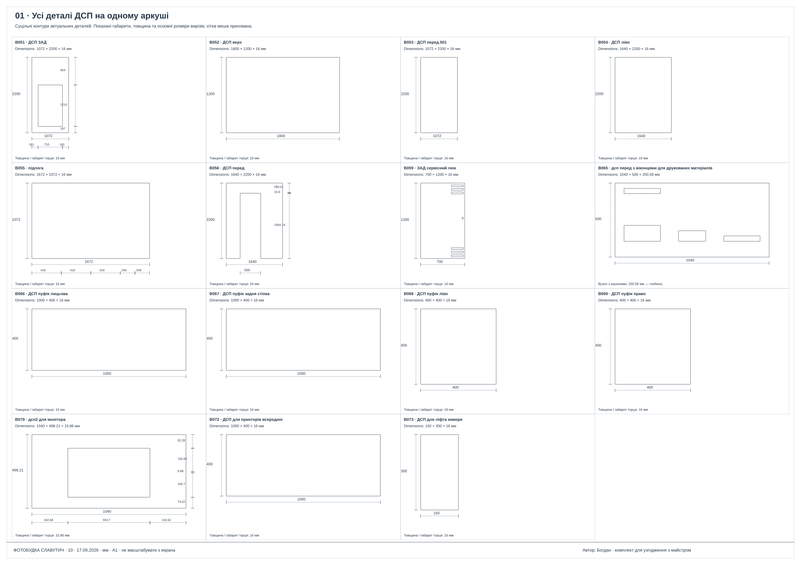
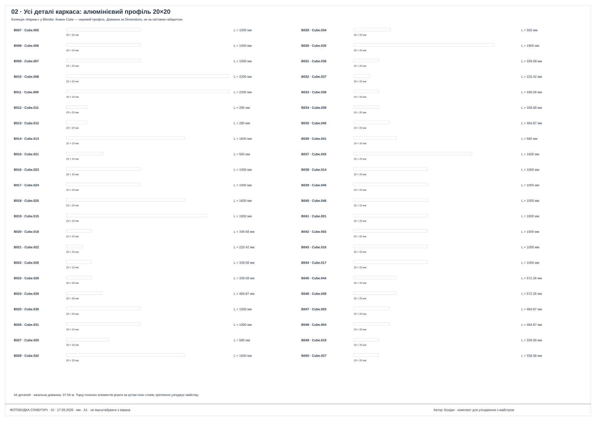
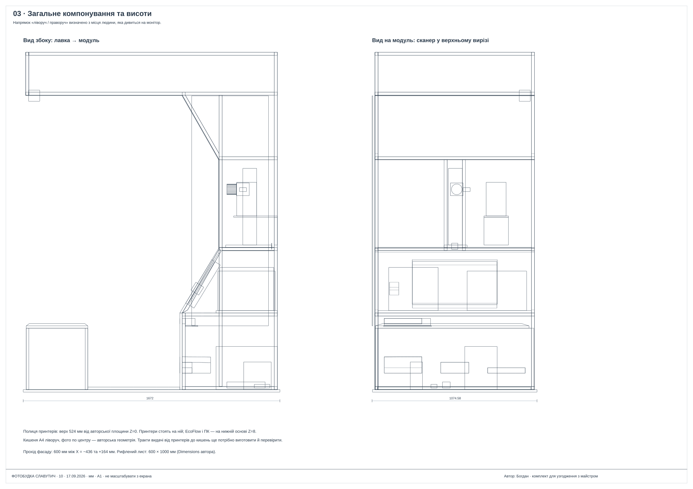
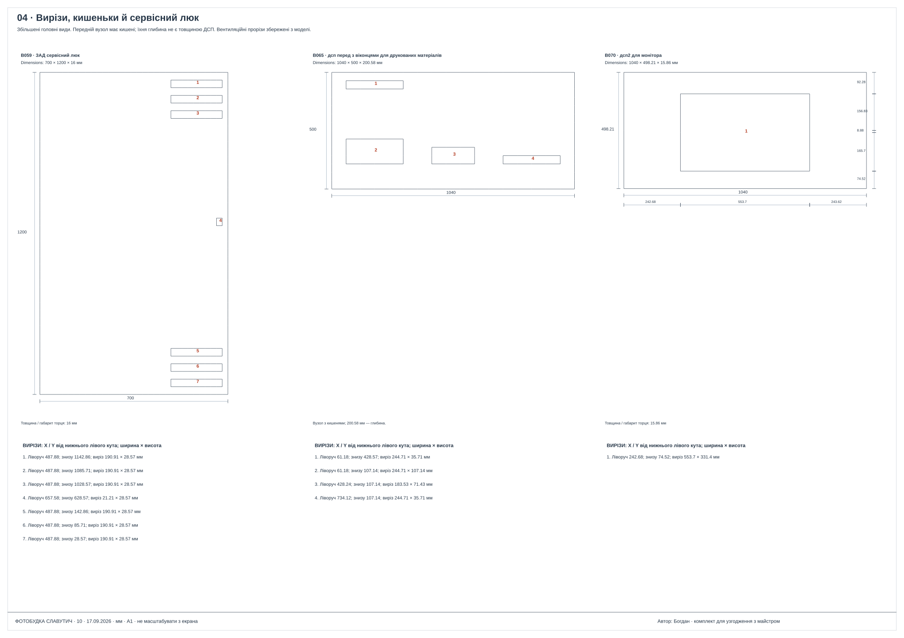
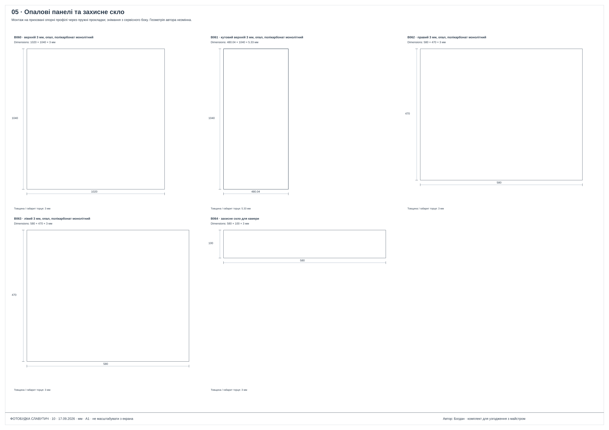
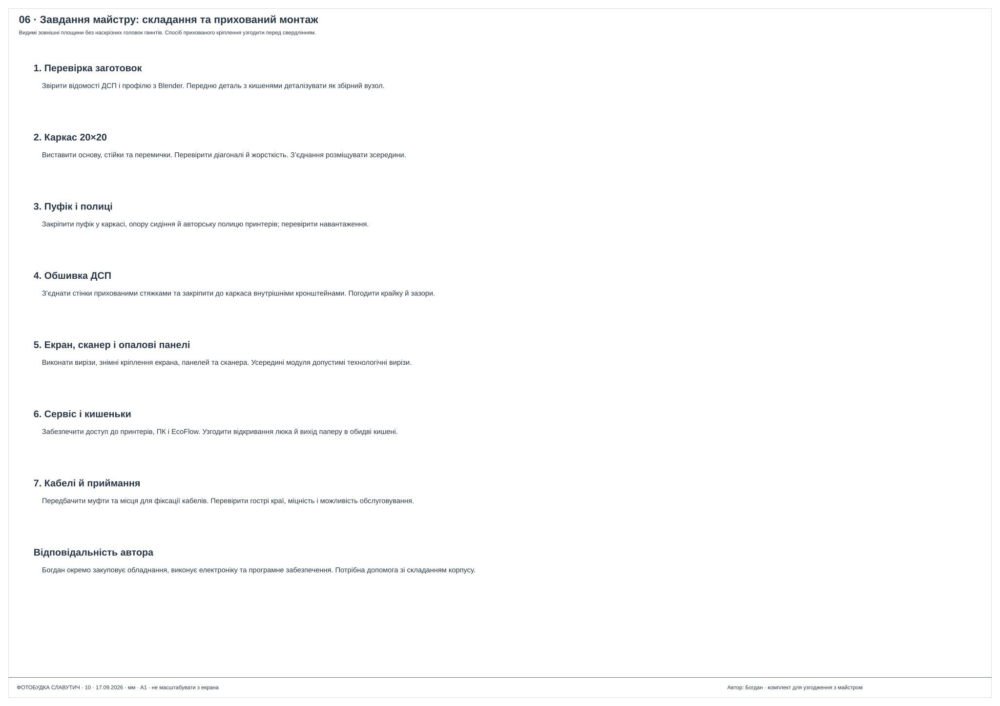

Що вже підготовлено
Авторська 3D-модель, компонування, відомості деталей і креслення. Білий корпус, вбудований м’який пуфік, сенсорний екран, світлові панелі, дзеркало та сервісний люк.
ФОТОБУДКА СЛАВУТИЧ · ШУКАЄМО МАЙСТРА
Людина сідає, обирає послугу на сенсорному екрані та отримує надруковані фото. Документи можна сканувати й друкувати їхні копії.
Потрібна допомога зі складанням каркаса й обшивки ДСП та монтажем пуфіка, екрана і світлових панелей. Обладнання, електроніку та програмне забезпечення організовує автор проєкту — Богдан.
Авторська 3D-модель, компонування, відомості деталей і креслення. Білий корпус, вбудований м’який пуфік, сенсорний екран, світлові панелі, дзеркало та сервісний люк.
Зібрати міцний каркас з алюмінієвого профілю 20×20, виконати порізку та вирізи ДСП, обшити каркас і змонтувати пуфік, екран, кишеньки та опалові полікарбонатні панелі.
Богдан — автор проєкту. Самостійно організовує закупівлю обладнання, електроніку, програмне забезпечення та налаштування кіоска.
Знайти людину або майстерню, яка перевірить конструкцію, оцінить матеріали й роботу та збере каркас з обшивкою. Поточне завдання — фізичне виготовлення корпусу, а не розробка електроніки чи ПЗ.
АЛЬБОМ ДЛЯ МЕБЛЯРІВ
Шість аркушів А1. Натисніть аркуш, щоб відкрити його у повному розмірі. Монтажні отвори та кріплення потрібно погодити з майстром.






КОНКРЕТНІ ПИТАННЯ
ПО КАТЕГОРІЯХ
СЦЕНАРІЇ · СЛАВУТИЧ · 2026
Змінюйте кількість послуг, ціни й витрати. Результат — сценарій за введеними припущеннями, не прогноз попиту.